Chương 8: Công cụ phân tích OHDSI
Công cụ phân tích OHDSI
Trưởng nhóm chương: Martijn Schuemie & Frank DeFalco
OHDSI cung cấp nhiều loại công cụ mã nguồn mở để hỗ trợ các trường hợp sử dụng phân tích dữ liệu khác nhau trên dữ liệu quan sát cấp độ bệnh nhân. Điểm chung của các công cụ này là tất cả đều có thể tương tác với một hoặc nhiều cơ sở dữ liệu sử dụng Mô hình dữ liệu chung (CDM). Hơn nữa, các công cụ này chuẩn hóa các phân tích cho nhiều trường hợp sử dụng khác nhau; Thay vì phải bắt đầu từ con số không, một phân tích có thể được thực hiện bằng cách điền vào các mẫu chuẩn. Điều này giúp việc thực hiện phân tích trở nên dễ dàng hơn, đồng thời cải thiện khả năng tái lập và tính minh bạch. Ví dụ, có vẻ như có vô số cách để tính tỷ lệ mắc bệnh, nhưng những cách này có thể được chỉ định trong các công cụ OHDSI chỉ với một vài lựa chọn, và bất kỳ ai đưa ra những lựa chọn tương tự sẽ tính toán tỷ lệ mắc bệnh theo cùng một cách.
Trong chương này, trước tiên chúng tôi mô tả nhiều cách khác nhau mà chúng ta có thể chọn để thực hiện một phân tích và các chiến lược mà phân tích đó có thể sử dụng. Sau đó, chúng tôi xem xét các công cụ OHDSI khác nhau và cách chúng phù hợp với các trường hợp sử dụng khác nhau.
Thực hiện phân tích
Hình 8.1 cho thấy các cách khác nhau mà chúng ta có thể chọn để thực hiện một nghiên cứu trên cơ sở dữ liệu sử dụng CDM.
Có ba phương pháp chính để thực hiện một nghiên cứu. Phương pháp đầu tiên là viết mã tùy chỉnh không sử dụng bất kỳ công cụ nào mà OHDSI cung cấp. Người ta có thể viết một phân tích mới (de novo) bằng R, SAS hoặc bất kỳ ngôn ngữ nào khác. Điều này mang lại sự linh hoạt tối đa và thực tế có thể là lựa chọn duy nhất nếu phân tích cụ thể đó không được hỗ trợ bởi bất kỳ công cụ nào của chúng tôi. Tuy nhiên, con đường này đòi hỏi nhiều kỹ năng kỹ thuật, thời gian và công sức, và khi phân tích trở nên phức tạp hơn, việc tránh lỗi trong mã sẽ trở nên khó khăn hơn.
Phương pháp thứ hai liên quan đến việc phát triển phân tích bằng R và sử dụng các gói trong Thư viện phương pháp OHDSI (Methods Library). Tối thiểu, người ta có thể sử dụng các gói SqlRender và DatabaseConnector được mô tả chi tiết hơn trong Chương 9 cho phép cùng một
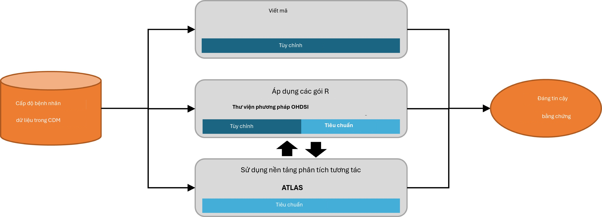
Hình 8.1: Các cách khác nhau để thực hiện một phân tích trên dữ liệu trong CDM.
mã được thực thi trên nhiều nền tảng cơ sở dữ liệu khác nhau, chẳng hạn như PostgreSQL, SQL Server và Oracle. Các gói khác như CohortMethod và PatientLevelPrediction cung cấp các hàm R cho phân tích nâng cao trên CDM có thể được gọi trong mã của người dùng. Cách này vẫn đòi hỏi nhiều chuyên môn kỹ thuật, nhưng bằng cách tái sử dụng các thành phần đã được xác thực của Thư viện phương pháp, chúng ta có thể làm việc hiệu quả hơn và ít xảy ra lỗi hơn so với việc sử dụng mã hoàn toàn tùy chỉnh.
Phương pháp thứ ba dựa trên nền tảng phân tích tương tác ATLAS của chúng tôi, một công cụ dựa trên web cho phép những người không lập trình thực hiện nhiều loại phân tích một cách hiệu quả. ATLAS sử dụng các Thư viện phương pháp nhưng cung cấp một giao diện đồ họa đơn giản để thiết kế các phân tích và trong nhiều trường hợp, tạo ra mã R cần thiết để chạy phân tích. Tuy nhiên, ATLAS không hỗ trợ tất cả các tùy chọn có sẵn trong Thư viện phương pháp. Mặc dù dự kiến rằng phần lớn các nghiên cứu có thể được thực hiện thông qua ATLAS, một số nghiên cứu có thể yêu cầu sự linh hoạt được cung cấp bởi phương pháp thứ hai.
ATLAS và Thư viện phương pháp không độc lập với nhau. Một số phân tích phức tạp hơn có thể được gọi trong ATLAS được thực hiện thông qua các lệnh gọi đến các gói trong Thư viện phương pháp. Tương tự, các nhóm thuần tập được sử dụng trong Thư viện phương pháp thường được thiết kế trong ATLAS.
Chiến lược phân tích
Ngoài chiến lược được sử dụng để thực hiện phân tích của chúng ta trên CDM, ví dụ thông qua mã hóa tùy chỉnh hoặc sử dụng mã phân tích tiêu chuẩn trong Thư viện phương pháp, còn có nhiều chiến lược khác để sử dụng các kỹ thuật phân tích đó nhằm tạo ra bằng chứng. Hình
- làm nổi bật ba chiến lược được sử dụng trong OHDSI.
Chiến lược đầu tiên coi mỗi phân tích là một nghiên cứu cá nhân duy nhất. Phân tích phải được chỉ định trước trong một giao thức, được triển khai dưới dạng mã, thực thi trên dữ liệu, sau đó kết quả có thể được tổng hợp và diễn giải. Đối với mỗi câu hỏi, tất cả các bước phải được lặp lại. Một ví dụ về phân tích như vậy là nghiên cứu của OHDSI về nguy cơ phù mạch liên quan đến levetiracetam so với phenytoin. (Duke và cộng sự, 2017) Ở đây, một giao thức
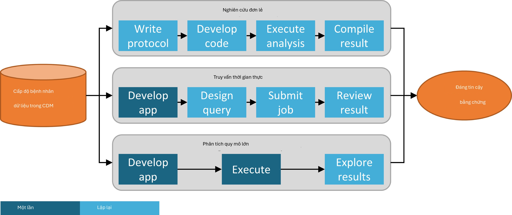
Hình 8.2: Các chiến lược tạo bằng chứng cho các câu hỏi (lâm sàng).
đã được viết trước, mã phân tích sử dụng Thư viện phương pháp OHDSI đã được phát triển và thực thi trên mạng lưới OHDSI, và kết quả đã được tổng hợp và phổ biến trong một ấn phẩm tạp chí.
Chiến lược thứ hai phát triển một ứng dụng cho phép người dùng trả lời một nhóm câu hỏi cụ thể trong thời gian thực hoặc gần thời gian thực. Sau khi ứng dụng đã được phát triển, người dùng có thể tương tác xác định các truy vấn, gửi chúng và xem kết quả. Một ví dụ về chiến lược này là công cụ định nghĩa và tạo nhóm thuần tập trong ATLAS. Công cụ này cho phép người dùng chỉ định các định nghĩa nhóm thuần tập với độ phức tạp khác nhau và thực thi định nghĩa đó trên cơ sở dữ liệu để xem có bao nhiêu người đáp ứng các tiêu chí bao gồm và loại trừ khác nhau.
Chiến lược thứ ba tương tự tập trung vào một nhóm câu hỏi, nhưng sau đó cố gắng tạo ra một cách đầy đủ tất cả các bằng chứng cho các câu hỏi trong nhóm đó. Người dùng sau đó có thể khám phá bằng chứng khi cần thông qua nhiều giao diện khác nhau. Một ví dụ là nghiên cứu của OHDSI về tác động của các phương pháp điều trị trầm cảm. (Schuemie và cộng sự, 2018b) Trong nghiên cứu này, tất cả các phương pháp điều trị trầm cảm được so sánh cho một tập hợp lớn các kết quả quan tâm trên bốn cơ sở dữ liệu quan sát lớn. Bộ kết quả đầy đủ, bao gồm 17.718 tỷ lệ nguy cơ được hiệu chuẩn theo kinh nghiệm cùng với các chẩn đoán nghiên cứu mở rộng, có sẵn trong một ứng dụng web tương tác.1
ATLAS
ATLAS là một công cụ dựa trên web, miễn phí và công khai, được cộng đồng OHDSI phát triển nhằm tạo điều kiện thuận lợi cho việc thiết kế và thực hiện các phân tích trên dữ liệu quan sát cấp độ bệnh nhân, được chuẩn hóa theo định dạng CDM. ATLAS được triển khai như một ứng dụng web kết hợp với OHDSI WebAPI và thường được lưu trữ trên Apache Tomcat. Việc thực hiện các phân tích thời gian thực đòi hỏi quyền truy cập vào dữ liệu cấp độ bệnh nhân trong CDM và do đó thường được cài đặt phía sau tường lửa của tổ chức. Tuy nhiên, cũng có một ATLAS công khai2, và
1http://data.ohdsi.org/SystematicEvidence/ 2http://www.ohdsi.org/web/atlas
mặc dù phiên bản ATLAS này chỉ có quyền truy cập vào một vài tập dữ liệu mô phỏng nhỏ, nó vẫn có thể được sử dụng cho nhiều mục đích bao gồm thử nghiệm và đào tạo. Thậm chí có thể xác định đầy đủ một nghiên cứu dự đoán hoặc ước tính tác động bằng cách sử dụng phiên bản ATLAS công khai và tự động tạo mã R để thực hiện nghiên cứu đó. Mã đó sau đó có thể được chạy trong bất kỳ môi trường nào có sẵn CDM mà không cần phải cài đặt ATLAS và WebAPI.
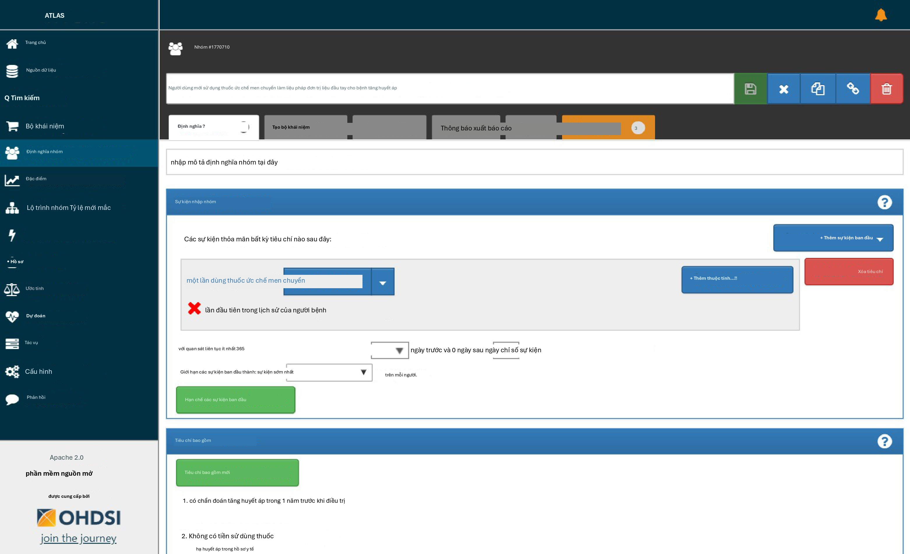
Hình 8.3: Giao diện người dùng ATLAS.
Ảnh chụp màn hình của ATLAS được cung cấp trong Hình 8.3. Ở bên trái là thanh điều hướng hiển thị các chức năng khác nhau được cung cấp bởi ATLAS:
Nguồn dữ liệu (Data Sources) cung cấp khả năng xem xét các báo cáo mô tả, chuẩn hóa cho từng nguồn dữ liệu mà bạn đã cấu hình trong nền tảng Atlas của mình. Tính năng này sử dụng chiến lược phân tích quy mô lớn: tất cả các mô tả đã được tính toán trước. Nguồn dữ liệu được thảo luận trong Chương 11.
Tìm kiếm từ vựng (Vocabulary Search) Atlas cung cấp khả năng tìm kiếm và khám phá từ vựng chuẩn hóa OMOP để hiểu những khái niệm nào tồn tại trong các từ vựng đó và cách áp dụng các khái niệm đó trong phân tích chuẩn hóa của bạn đối với các nguồn dữ liệu của bạn. Tính năng này được thảo luận trong Chương 5.
Bộ khái niệm (Concept Sets) cung cấp khả năng tạo các tập hợp các biểu thức logic có thể được sử dụng để xác định một tập hợp các khái niệm sẽ được sử dụng trong suốt các phân tích chuẩn hóa của bạn. Bộ khái niệm cung cấp sự tinh vi hơn so với một danh sách đơn giản các mã hoặc giá trị. Một bộ khái niệm bao gồm nhiều khái niệm từ từ vựng chuẩn hóa kết hợp với các chỉ số logic cho phép người dùng chỉ định rằng họ quan tâm đến việc bao gồm hoặc loại trừ các khái niệm liên quan trong hệ thống phân cấp từ vựng. Tìm kiếm từ vựng, xác định tập hợp các khái niệm và chỉ định
logic được sử dụng để giải quyết một bộ khái niệm cung cấp một cơ chế mạnh mẽ để định nghĩa ngôn ngữ y tế thường khó hiểu được sử dụng trong các kế hoạch phân tích. Các bộ khái niệm này có thể được lưu trong ATLAS và sau đó được sử dụng trong suốt quá trình phân tích của bạn như một phần của các định nghĩa nhóm thuần tập hoặc các đặc tả phân tích.
Định nghĩa nhóm thuần tập (Cohort Definitions) là khả năng xây dựng một tập hợp những người đáp ứng một hoặc nhiều tiêu chí trong một khoảng thời gian và các nhóm thuần tập này sau đó có thể đóng vai trò là cơ sở đầu vào cho tất cả các phân tích tiếp theo của bạn. Tính năng này được thảo luận trong Chương 10.
Đặc điểm (Characterizations) là một khả năng phân tích cho phép bạn xem xét một hoặc nhiều nhóm thuần tập mà bạn đã định nghĩa và tóm tắt các đặc điểm về các quần thể bệnh nhân đó. Tính năng này sử dụng chiến lược truy vấn thời gian thực và được thảo luận trong Chương 11.
Lộ trình nhóm thuần tập (Cohort Pathways) là một công cụ phân tích cho phép bạn xem xét trình tự các sự kiện lâm sàng xảy ra trong một hoặc nhiều quần thể. Tính năng này sử dụng chiến lược truy vấn thời gian thực và được thảo luận trong Chương 11.
Tỷ lệ mắc bệnh (Incidence Rates) là một công cụ cho phép bạn ước tính tỷ lệ mắc các kết quả trong các quần thể mục tiêu quan tâm. Tính năng này sử dụng chiến lược truy vấn thời gian thực và được thảo luận trong Chương 11.
Hồ sơ (Profiles) là một công cụ cho phép bạn khám phá dữ liệu quan sát dọc của từng bệnh nhân để tóm tắt những gì đang xảy ra trong một cá nhân cụ thể. Tính năng này sử dụng chiến lược truy vấn thời gian thực.
Ước tính cấp độ quần thể (Population Level Estimation) là khả năng cho phép bạn xác định một nghiên cứu ước tính tác động cấp độ quần thể sử dụng thiết kế nhóm thuần tập so sánh, nhờ đó các so sánh giữa một hoặc nhiều nhóm thuần tập mục tiêu và đối chứng có thể được khám phá cho một loạt các kết quả. Tính năng này có thể được coi là thực hiện chiến lược truy vấn thời gian thực, vì không cần mã hóa và được thảo luận trong Chương 12.
Dự đoán cấp độ bệnh nhân (Patient Level Prediction) là khả năng cho phép bạn áp dụng các thuật toán học máy để thực hiện các phân tích dự đoán cấp độ bệnh nhân, nhờ đó bạn có thể dự đoán một kết quả trong bất kỳ phơi nhiễm mục tiêu nào. Tính năng này có thể được coi là thực hiện chiến lược truy vấn thời gian thực, vì không cần mã hóa và được thảo luận trong Chương 13.
Công việc (Jobs) Chọn mục menu Công việc để khám phá trạng thái của các tiến trình đang chạy thông qua WebAPI. Các công việc thường là các tiến trình chạy dài như tạo một nhóm thuần tập hoặc tính toán các báo cáo đặc điểm nhóm thuần tập.
Cấu hình (Configuration) Chọn mục menu Cấu hình để xem xét các nguồn dữ liệu đã được cấu hình trong phần cấu hình nguồn.
Phản hồi (Feedback) Liên kết Phản hồi sẽ đưa bạn đến nhật ký sự cố cho Atlas để bạn có thể ghi lại một sự cố mới hoặc tìm kiếm thông qua các sự cố hiện có. Nếu bạn có ý tưởng cho các tính năng mới hoặc cải tiến, đây cũng là nơi để lưu ý những điều này cho cộng đồng phát triển.
Bảo mật
ATLAS và WebAPI cung cấp một mô hình bảo mật chi tiết để kiểm soát quyền truy cập vào các tính năng hoặc nguồn dữ liệu trong toàn bộ nền tảng. Hệ thống bảo mật được xây dựng tận dụng thư viện Apache Shiro. Thông tin bổ sung về hệ thống bảo mật có thể được tìm thấy trong
wiki bảo mật WebAPI trực tuyến.3
Tài liệu
Tài liệu cho ATLAS có thể được tìm thấy trực tuyến trong wiki kho lưu trữ ATLAS GitHub.4 Wiki này bao gồm thông tin về các tính năng ứng dụng khác nhau cũng như các liên kết đến các video hướng dẫn trực tuyến.
Cách cài đặt
Việc cài đặt ATLAS được thực hiện kết hợp với OHDSI WebAPI. Hướng dẫn cài đặt cho từng thành phần có sẵn trực tuyến trong Hướng dẫn thiết lập kho lưu trữ ATLAS GitHub5 và Hướng dẫn cài đặt kho lưu trữ WebAPI GitHub.6
Thư viện phương pháp (Methods Library)
Thư viện phương pháp OHDSI là tập hợp các gói R mã nguồn mở được hiển thị trong Hình 8.4.
Các gói này cung cấp các hàm R mà cùng nhau có thể được sử dụng để thực hiện một nghiên cứu quan sát hoàn chỉnh, bắt đầu từ dữ liệu trong CDM và dẫn đến các ước tính và các thống kê hỗ trợ, số liệu và bảng biểu. Các gói tương tác trực tiếp với dữ liệu quan sát trong CDM và có thể được sử dụng đơn giản để cung cấp khả năng tương thích đa nền tảng cho các phân tích tùy chỉnh hoàn toàn như được mô tả trong Chương 9, hoặc có thể cung cấp các phân tích chuẩn hóa nâng cao cho đặc điểm quần thể (Chương 11), ước tính tác động cấp độ quần thể (Chương 12) và dự đoán cấp độ bệnh nhân (Chương 13). Thư viện phương pháp hỗ trợ các phương pháp thực hành tốt nhất cho việc sử dụng dữ liệu quan sát và thiết kế nghiên cứu quan sát như đã học từ các nghiên cứu trước đây và đang diễn ra, chẳng hạn như tính minh bạch, khả năng tái lập, cũng như đo lường các đặc điểm vận hành của các phương pháp trong một bối cảnh cụ thể và hiệu chuẩn thực nghiệm các ước tính do các phương pháp đó tạo ra.
Thư viện phương pháp đã được sử dụng trong nhiều nghiên cứu lâm sàng đã công bố (Boland và cộng sự, 2017; Duke và cộng sự, 2017; Ramcharran và cộng sự, 2017; Weinstein và cộng sự, 2017; Wang và cộng sự, 2017; Ryan và cộng sự, 2017, 2018; Vashisht và cộng sự, 2018; Yuan và cộng sự, 2018; Johnston và cộng sự, 2019), cũng như các nghiên cứu phương pháp luận. (Schuemie và cộng sự, 2014, 2016; Reps và cộng sự, 2018; Tian và cộng sự, 2018; Schuemie và cộng sự, 2018a,b; Reps và cộng sự, 2019) Tính hợp lệ của việc triển khai các phương pháp trong Thư viện phương pháp được mô tả trong Chương 17.
Hỗ trợ phân tích quy mô lớn
Một tính năng chính được kết hợp trong tất cả các gói là khả năng chạy hiệu quả nhiều phân tích. Ví dụ, khi thực hiện ước tính cấp độ quần thể, gói CohortMethod
3https://github.com/OHDSI/WebAPI/wiki/Security-Configuration 4https://github.com/OHDSI/ATLAS/wiki 5https://github.com/OHDSI/Atlas/wiki/Atlas-Setup-Guide 6https://github.com/OHDSI/WebAPI/wiki/WebAPI-Installation-Guide
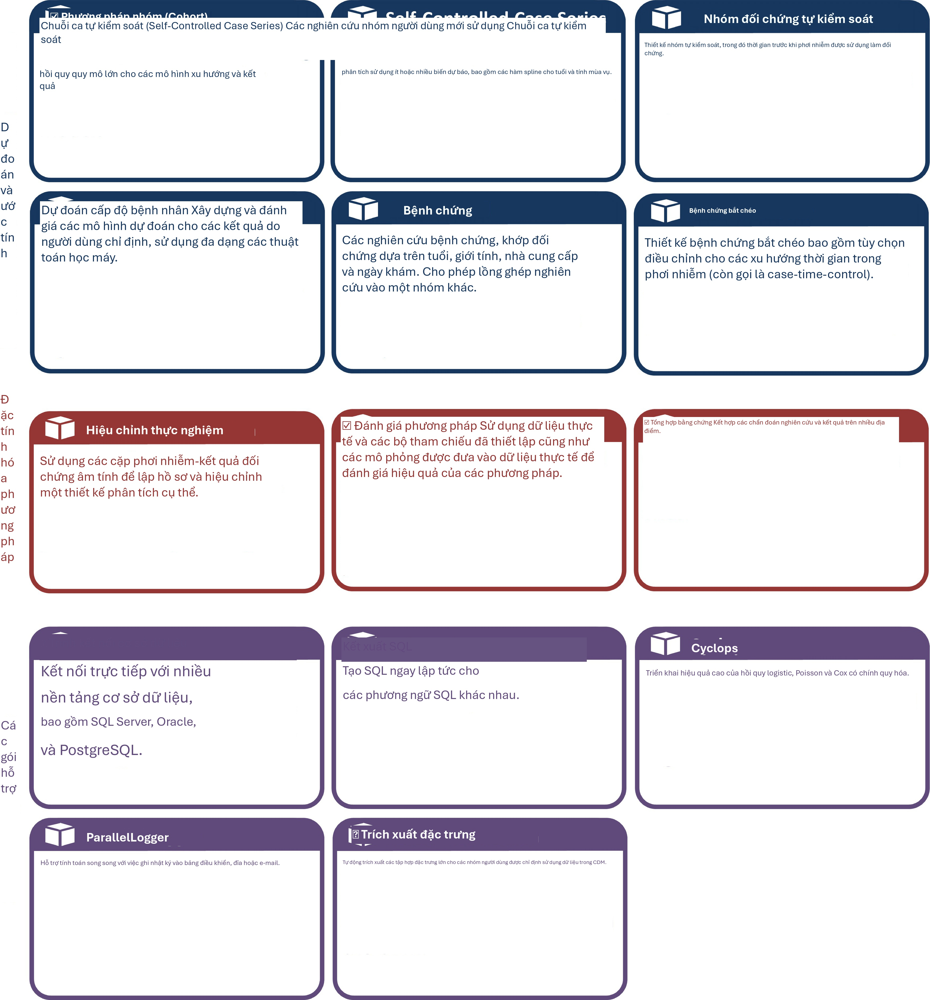
Hình 8.4: Các gói trong Thư viện phương pháp OHDSI.
cho phép tính toán các ước tính quy mô tác động cho nhiều phơi nhiễm và kết quả, sử dụng các cài đặt phân tích khác nhau và gói này sẽ tự động chọn cách tối ưu để tính toán tất cả các tập dữ liệu trung gian và cuối cùng cần thiết. Các bước có thể được tái sử dụng, chẳng hạn như trích xuất các biến đồng hành hoặc khớp một mô hình xu hướng được sử dụng cho một cặp mục tiêu-đối chứng nhưng nhiều kết quả, sẽ chỉ được thực thi một lần. Nếu có thể, các tính toán sẽ diễn ra song song để tối đa hóa việc sử dụng các tài nguyên tính toán.
Hiệu quả tính toán này cho phép phân tích quy mô lớn, trả lời nhiều câu hỏi cùng một lúc và cũng rất cần thiết để bao gồm các giả thuyết kiểm soát (ví dụ: kiểm soát âm tính) để đo lường các đặc điểm vận hành của các phương pháp của chúng ta và thực hiện hiệu chuẩn thực nghiệm như được mô tả trong Chương 18.
Hỗ trợ dữ liệu lớn
Thư viện phương pháp cũng được thiết kế để chạy trên các cơ sở dữ liệu rất lớn và có thể thực hiện các tính toán liên quan đến lượng dữ liệu lớn. Điều này đạt được theo ba cách:
Hầu hết việc thao tác dữ liệu được thực hiện trên máy chủ cơ sở dữ liệu. Một phân tích thường chỉ yêu cầu một phần nhỏ toàn bộ dữ liệu trong cơ sở dữ liệu và Thư viện phương pháp, thông qua các gói SqlRender và DatabaseConnector, cho phép các thao tác nâng cao được thực hiện trên máy chủ để tiền xử lý và trích xuất dữ liệu liên quan.
Các đối tượng dữ liệu cục bộ lớn được lưu trữ theo cách tiết kiệm bộ nhớ. Đối với dữ liệu được tải xuống máy cục bộ, Thư viện phương pháp sử dụng gói ff để lưu trữ và làm việc với các đối tượng dữ liệu lớn. Điều này cho phép chúng ta làm việc với dữ liệu lớn hơn nhiều so với bộ nhớ hiện có.
Tính toán hiệu năng cao được áp dụng khi cần thiết. Ví dụ, gói Cyclops triển khai một công cụ hồi quy hiệu quả cao được sử dụng trong toàn bộ Thư viện phương pháp để thực hiện các hồi quy quy mô lớn (số lượng biến lớn, số lượng quan sát lớn) mà nếu không thì không thể thực hiện được.
Tài liệu
R cung cấp một cách tiêu chuẩn để lập tài liệu cho các gói. Mỗi gói có một hướng dẫn sử dụng gói ghi lại mọi hàm và tập dữ liệu có trong gói. Tất cả các hướng dẫn sử dụng gói đều có sẵn trực tuyến thông qua trang web Thư viện phương pháp7, thông qua các kho lưu trữ GitHub của gói và đối với những gói có sẵn thông qua CRAN, chúng có thể được tìm thấy trong CRAN. Hơn nữa, từ trong R, hướng dẫn sử dụng gói có thể được tham khảo bằng cách sử dụng dấu chấm hỏi. Ví dụ, sau khi tải gói DatabaseConnector, gõ lệnh
?connect sẽ hiển thị tài liệu về hàm “connect”.
Ngoài hướng dẫn sử dụng gói, nhiều gói còn cung cấp các đoạn tài liệu (vignettes). Các đoạn tài liệu này là tài liệu dạng dài mô tả cách sử dụng một gói để thực hiện các tác vụ nhất định. Ví dụ, một đoạn tài liệu8 mô tả cách thực hiện nhiều phân tích một cách hiệu quả bằng cách sử dụng
7https://ohdsi.github.io/MethodsLibrary 8https://ohdsi.github.io/CohortMethod/articles/MultipleAnalyses.html
gói CohortMethod. Các đoạn tài liệu cũng có thể được tìm thấy thông qua trang web Thư viện phương pháp, thông qua các kho lưu trữ GitHub của gói và đối với những gói có sẵn thông qua CRAN, chúng có thể được tìm thấy trong CRAN.
Yêu cầu hệ thống
Hai môi trường tính toán có liên quan khi thảo luận về các yêu cầu hệ thống: Máy chủ cơ sở dữ liệu và máy trạm phân tích.
Máy chủ cơ sở dữ liệu phải lưu trữ dữ liệu chăm sóc sức khỏe quan sát ở định dạng CDM. Thư viện phương pháp hỗ trợ nhiều hệ quản trị cơ sở dữ liệu bao gồm các hệ thống cơ sở dữ liệu truyền thống (PostgreSQL, Microsoft SQL Server và Oracle), kho dữ liệu song song (Microsoft APS, IBM Netezza và Amazon Redshift), cũng như các nền tảng Dữ liệu lớn (Hadoop thông qua Impala và Google BigQuery).
Máy trạm phân tích là nơi Thư viện phương pháp được cài đặt và chạy. Đây có thể là một máy cục bộ, chẳng hạn như máy tính xách tay của ai đó, hoặc một máy chủ từ xa chạy RStudio Server. Trong mọi trường hợp, các yêu cầu là R phải được cài đặt, tốt nhất là cùng với RStudio. Thư viện phương pháp cũng yêu cầu phải cài đặt Java. Máy trạm phân tích cũng phải có khả năng kết nối với máy chủ cơ sở dữ liệu, cụ thể là bất kỳ tường lửa nào giữa chúng phải mở các cổng truy cập máy chủ cơ sở dữ liệu cho máy trạm. Một số phân tích có thể đòi hỏi nhiều tài nguyên tính toán, vì vậy việc có nhiều lõi xử lý và bộ nhớ dồi dào có thể giúp tăng tốc các phân tích. Chúng tôi khuyên bạn nên có ít nhất bốn lõi và 16 gigabyte bộ nhớ.
Cách cài đặt
Dưới đây là các bước cài đặt môi trường cần thiết để chạy các gói R của OHDSI. Cần cài đặt bốn thứ:
R là một môi trường tính toán thống kê. Nó đi kèm với một giao diện người dùng cơ bản chủ yếu là giao diện dòng lệnh.
Rtools là một tập hợp các chương trình cần thiết trên Windows để xây dựng các gói R từ mã nguồn.
RStudio là một IDE (Môi trường phát triển tích hợp) giúp sử dụng R dễ dàng hơn. Nó bao gồm trình soạn thảo mã, các công cụ gỡ lỗi và trực quan hóa. Vui lòng sử dụng nó để có trải nghiệm R tốt hơn.
Java là một môi trường tính toán cần thiết để chạy một số thành phần trong các gói R của OHDSI, ví dụ như những thành phần cần thiết để kết nối với cơ sở dữ liệu.
Dưới đây chúng tôi mô tả cách cài đặt từng thành phần này trong môi trường Windows.

Cài đặt R
- Truy cập https://cran.r-project.org/, nhấp vào “Download R for Windows”, sau đó chọn “base”, sau đó nhấp vào liên kết Tải xuống được chỉ ra trong Hình 8.5.
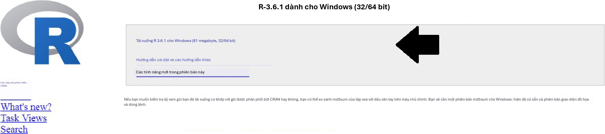
Hình 8.5: Tải xuống R từ CRAN.
- Sau khi quá trình tải xuống hoàn tất, hãy chạy trình cài đặt. Sử dụng các tùy chọn mặc định ở mọi nơi, với hai ngoại lệ: Thứ nhất, tốt hơn là không nên cài đặt vào thư mục tệp chương trình (program files). Thay vào đó, chỉ cần tạo R thành một thư mục con của ổ C của bạn như được hiển thị trong Hình 8.6. Thứ hai, để tránh các vấn đề do kiến trúc khác biệt giữa R và Java, hãy vô hiệu hóa kiến trúc 32-bit như được hiển thị trong Hình 8.7.
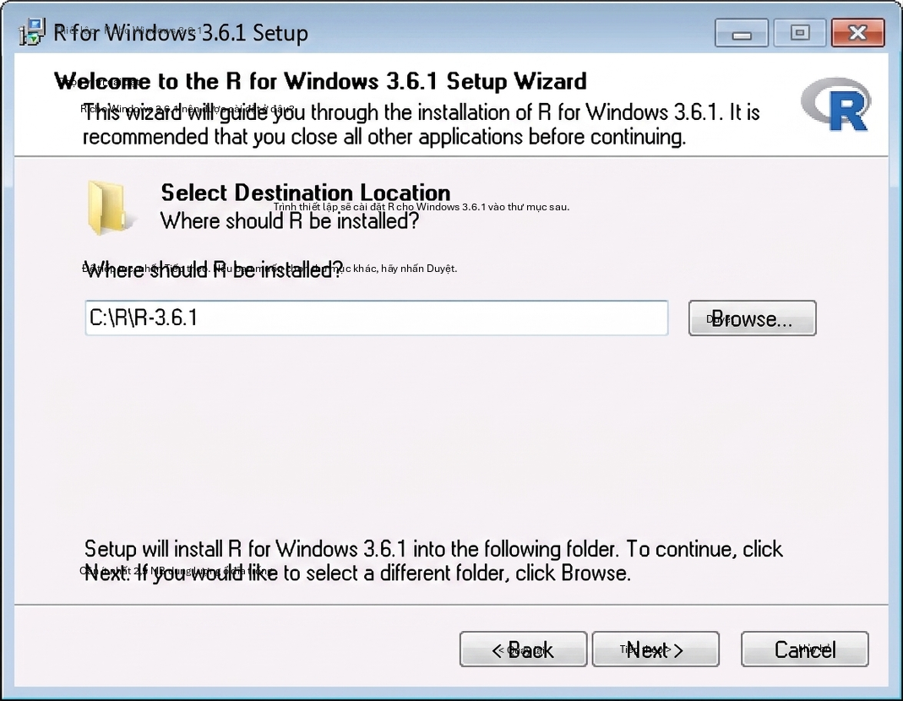
Hình 8.6: Cài đặt thư mục đích cho R. Sau khi hoàn tất, bạn sẽ có thể chọn R từ Menu Bắt đầu (Start Menu) của mình.
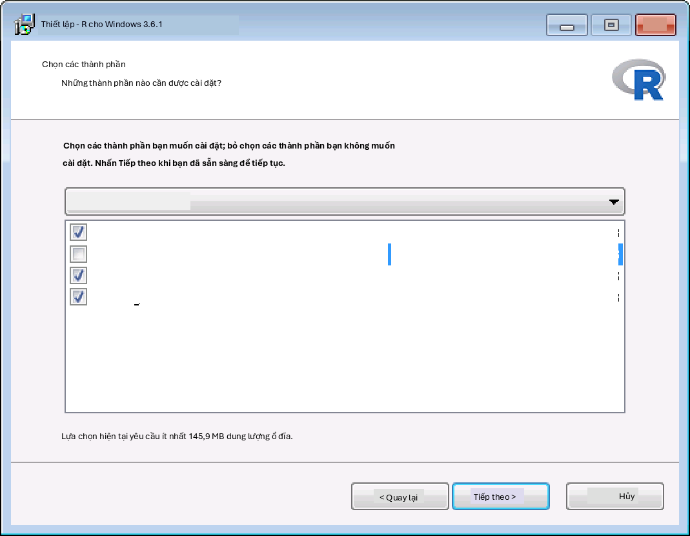
Hình 8.7: Vô hiệu hóa phiên bản 32-bit của R.
Cài đặt Rtools
Truy cập https://cran.r-project.org/, nhấp vào “Download R for Windows”, sau đó chọn “Rtools” và chọn phiên bản Rtools mới nhất để tải xuống.
Sau khi tải xuống hoàn tất, hãy chạy trình cài đặt. Chọn các tùy chọn mặc định ở mọi nơi.
Cài đặt RStudio
- Truy cập https://www.rstudio.com/, chọn “Download RStudio” (hoặc nút “Download” bên dưới “RStudio”), chọn phiên bản miễn phí và tải xuống trình cài đặt cho Windows như được hiển thị trong Hình 8.8.
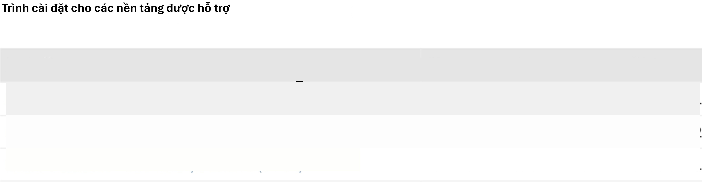
Hình 8.8: Tải xuống RStudio.
- Sau khi tải xuống, hãy khởi động trình cài đặt và sử dụng các tùy chọn mặc định ở mọi nơi.
Cài đặt Java
- Truy cập https://java.com/en/download/manual.jsp và chọn trình cài đặt Windows 64-bit như được hiển thị trong Hình 8.9. Nếu bạn cũng đã cài đặt phiên bản R 32-bit, bạn cũng phải cài đặt phiên bản Java khác (32-bit).
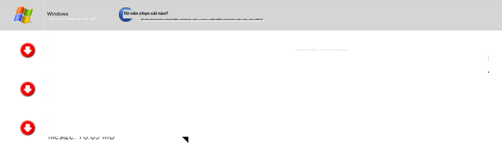
Hình 8.9: Tải xuống Java.
- Sau khi tải xuống, chỉ cần chạy trình cài đặt.
Xác minh cài đặt
Bây giờ bạn đã sẵn sàng, nhưng chúng ta nên kiểm tra lại. Khởi động RStudio và gõ
install.packages("SqlRender") library(SqlRender)
translate("SELECT TOP 10 * FROM person;", "postgresql")
## [1] "CHỌN * TỪ GIỚI HẠN người 10;"
Hàm này sử dụng Java, vì vậy nếu mọi thứ diễn ra tốt đẹp, chúng ta biết rằng cả R và Java đã được cài đặt chính xác!
Một thử nghiệm khác là xem liệu các gói nguồn có thể được xây dựng hay không. Chạy mã R sau để cài đặt gói CohortMethod từ kho lưu trữ GitHub của OHDSI:
install.packages("drat") drat::addRepo("OHDSI") install.packages("CohortMethod")
Chiến lược triển khai
Việc triển khai toàn bộ ngăn xếp công cụ OHDSI, bao gồm ATLAS và Thư viện phương pháp, trong một tổ chức là một nhiệm vụ khó khăn. Có nhiều thành phần với các phụ thuộc cần được xem xét và các cấu hình cần thiết lập. Vì lý do này, hai sáng kiến đã phát triển các chiến lược triển khai tích hợp cho phép toàn bộ ngăn xếp được cài đặt như một gói, sử dụng một số hình thức ảo hóa: Broadsea và Amazon Web Services (AWS).
- Chiến lược triển khai 119
Broadsea
Broadsea9 sử dụng công nghệ container Docker.10 Các công cụ OHDSI được đóng gói cùng với các phụ thuộc thành một tệp nhị phân di động duy nhất gọi là Docker Image. Hình ảnh này sau đó có thể được chạy trên một dịch vụ công cụ Docker, tạo ra một máy ảo với tất cả phần mềm đã được cài đặt và sẵn sàng chạy. Các công cụ Docker có sẵn cho hầu hết các hệ điều hành, bao gồm Microsoft Windows, MacOS và Linux. Hình ảnh Docker Broadsea chứa các công cụ OHDSI chính, bao gồm Thư viện phương pháp và ATLAS.
Amazon AWS
Amazon đã chuẩn bị hai môi trường có thể được khởi tạo trong môi trường điện toán đám mây AWS chỉ với một cú nhấp chuột: OHDSI-in-a-Box11 và OHDSIonAWS.12
OHDSI-in-a-Box được tạo riêng làm môi trường học tập và được sử dụng trong hầu hết các hướng dẫn do cộng đồng OHDSI cung cấp. Nó bao gồm nhiều công cụ OHDSI, các tập dữ liệu mẫu, RStudio và các phần mềm hỗ trợ khác trong một máy ảo Windows chi phí thấp duy nhất. Một cơ sở dữ liệu PostgreSQL được sử dụng để lưu trữ CDM và cũng để lưu trữ các kết quả trung gian từ ATLAS. Các công cụ ánh xạ dữ liệu OMOP CDM và ETL cũng được bao gồm trong OHDSI-in-a-Box. Kiến trúc cho OHDSI-in-a-Box được mô tả trong Hình 8.10.
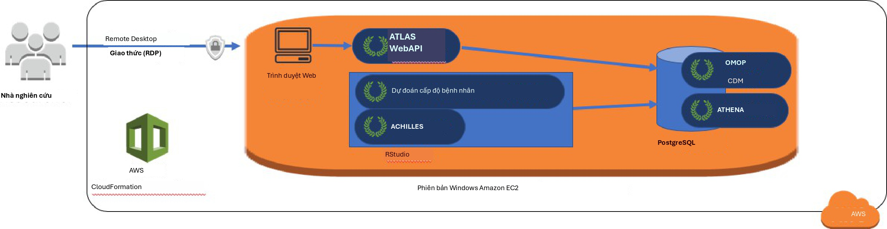
Hình 8.10: Kiến trúc Amazon Web Services cho OHDSI-in-a-Box.
OHDSIonAWS là một kiến trúc tham chiếu cho các môi trường OHDSI cấp doanh nghiệp, đa người dùng, có thể mở rộng và chịu lỗi, có thể được các tổ chức sử dụng để thực hiện phân tích dữ liệu của họ. Nó bao gồm một số tập dữ liệu mẫu và cũng có thể tự động tải dữ liệu chăm sóc sức khỏe thực tế của tổ chức bạn. Dữ liệu được đặt trong nền tảng cơ sở dữ liệu Amazon Redshift, được các công cụ OHDSI hỗ trợ. Các kết quả trung gian của ATLAS được lưu trữ trong cơ sở dữ liệu PostgreSQL. Ở giao diện người dùng, người dùng có quyền truy cập vào ATLAS và RStudio thông qua giao diện web (tận dụng RStudio Server). Trong RStudio, Thư viện phương pháp OHDSI đã được cài đặt và có thể được sử dụng để kết nối với các cơ sở dữ liệu. Tự động hóa để triển khai OHDSIonAWS là mã nguồn mở và có thể được tùy chỉnh để bao gồm
9https://github.com/OHDSI/Broadsea 10https://www.docker.com/ 11https://github.com/OHDSI/OHDSI-in-a-Box 12https://github.com/OHDSI/OHDSIonAWS
các công cụ quản lý và các phương pháp thực hành tốt nhất của tổ chức bạn. Kiến trúc cho OHDSIonAWS được mô tả trong Hình 8.11.
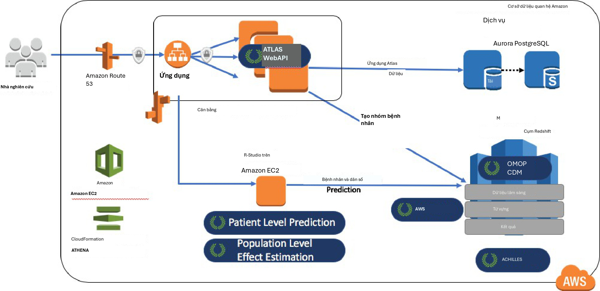
Hình 8.11: Kiến trúc Amazon Web Services cho OHDSIonAWS.
Tóm tắt

We can perform analyses against data in the CDM by
writing custom code
writing code that uses the R packages in the OHDSI Methods Library
using the interactive analysis platform ATLAS
OHDSI tools use different analysis strategies
Single studies
Real-time queries
Large-scale analytics
The majority of OHDSI analytics tool are embedded in
The interactive analysis platform ATLAS
The OHDSI Methods Library R packages
Several strategies exist facilitating the deployment of the OHDSI tools.
Chương 9